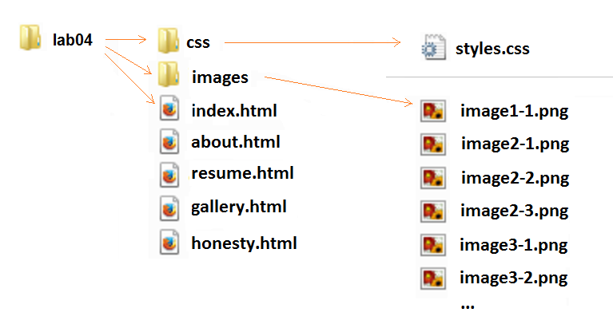

Section D: Wednesday, Nov 9, 2016 - 23:59
Grade value: 5% of your final course grade
• To create a personal website with a professional appearance.
• To use effective design in creating website.
• To obtain hand-on skills and to enhance the knowledge of HTML5 and CSS3.
In this lab you will create a personal website to post your blogs and present your academic and personal life.
To start, create a folder named lab04 as the website base folder, and then all your website stuff will be created inside the folder. At end, the folder will be compacted to a zip file and submitted to the Blackboard.
Website structure and navigation
The website must have five pages – index.html, about.html, resume.html, gallery.html and honesty.html, and the website should have the following directory structure:

The sytle.css file under the css folder is designed to serve all web pages, i.e. all HTML files should use the same style sheet file for creating menus or other styles.
The images folder is used store all image files of the website, including the images used by the image gallery. You can determine the name and type of images under the images folder, but the others must be same as those showed above.
The website must use a two-level navigation menu:
• The first level menu includes the following 7 items:
o Home
o About
o Resume
o Courses
o Gallery
o Honesty
o Links
• The items Courses and Links have the second level menus:
o The Course sub menu will contains the links to the outline pages of the your current learning courses on the ICT Website of Seneca College.
o The Links has two sub items of "Item1" and "Item2". Both of them link to "#".
Page Layouts and Contents
All web pages on the website must have the same theme and identical navigation menu and footer.
• The header will hold a two-level menu.
• The footer should contains “©2016 - <your name>”.
The "Home" page: index.html
• Starting page of the web site
• At the beginning of the page, show your blog title, such as Peter's Blog.
• This page uses the three column layout:
o 1st column, left, contains your portrait/photo, location, email link, links to you other personal site or your more detailed information if you wish.
o 2nd column, center, contains the entries of your blog post.
o 3re column, right, contains the list of blog post titles which are hyperlinks link to the bookmarks at the beginning of each post in the center column.
• You should set class attribute for the page container and each column.
• In the center column, you need to use article element for each post entry of blogs. Within each article element, there are three elements: header, section, footer. The values of the class attribute for these four elements should be named correspondingly as "post-entry", "entry-header", "entry-content" and "entry-footer".
• Place the author name, post created time, post tags in the footer
• Create at least 3 short blogs to demo or discuss the usage HTML elements and/or CSS. For example, "The demonstration of using tables", or "Examples of using nested list in HTML". To demonstrate the usage of CSS, you should use inline CSS styling or internal style sheet.
• It is not allowed to use table element for setting layout in the assignment.
The "About" page: about.html
This page has a one-column layout. Give a brief description of yourself, such your current program, school, courses, and so on.
The "Resume" page: resume.html
This page has a two-column layout, used to present your resume. Your resume should have at least 5 sections: PROFILE, SKILLS, EXPERIENCE, EDUCATION and HOBBIES. The resume should be in the main column, and you decide to put what inside the aside column.
The "Gallery" page: gallery.html
The page is the place to use pictures to show your hobbies and/or favorites. It uses one column layout to hold a grid image gallery of all your images. When clicking on a image or thumbnail, the corresponding full screen image should show up.
The "Honesty" page: honesty.html
This page will show the following content:
I declare that the assignment is my own work in accordance with Seneca Academic Policy. No part of this assignment has been copied manually or electronically from any other source (including web sites) or distributed to other students.
Name(s) Student ID(s)
Your name Your ID
• Your code of HTML, CSS or JavaScript must be well-formatted and properly commented. Each level of indentation should not exceed 3 spaces.
• Your code will be evaluated for correctness of syntax and appropriate usage.
• For the page layout, you must set up columns with CSS floats instead of using HTML tables.
• For the menu or navigation bars, You must use CSS.
• All CSS should be in style.css file except the part mention in requirements.
• Your web pages are required render correctly in Firefox and IE current version.
• It’s your responsibility to make sure all your work is copyright free.
• The HTML page must pass the W3C's HTML Validation.
• CSS used in the lab must pass the W3C CSS validation.
• Any error(s) for HTML and/or CSS validation will result in 25% penalty for the grade of your lab.
The assignment evaluation will base on adherence to the requirement specification above, including file structure, menu and page content, coding standards, overall appearances and etc.
• Compress your website folder to a zip file lab04.zip and submit it to the Blackboard (My.Seneca).
• NO LATE SUBMISSIONS for labs. Late Lab submissions will not be accepted and will receive a grade of zero (0).
• After the end (23:59) of the due date, the lab submission link on the Blackboard will no longer available.
• All INT222 labs are subject to change after released. It's your responsibility to keep your lab assignments up to date before the lab is submitted.